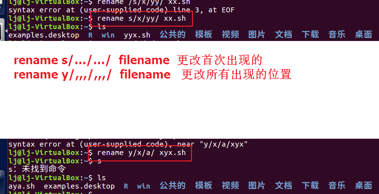

Linux 学习LOG
常规设置
更改为中文显示
- 安装中文语言
- 在语言列表中将“汉语”拖拽到第一行
- 应用
- 重启生效
系统升级
sudo apt-get update
sudo apt-get upgrade
sudo apt-get dist-upgrade
sudo reboot
sudo update-manager –d
软件安装
3大类包
通常Linux应用软件的安装包有三种：
- 1） tar包，如software-1.2.3-1.tar.gz。它是使用UNIX系统的打包工具tar打包的。
- 2） rpm包，如software-1.2.3-1.i386.rpm。它是RedhatLinux提供的一种包封装格式。
- 3） dpkg包，如software-1.2.3-1.deb。它是DebainLinux提供的一种包封装格式。
tar.gz --源程序
rpm、dpkg打包的则是可执行程序
tar包
1.取得安装包
2.
tar –xvzf #一步完成解压和解包
3.阅读install文件、readme文件
4．执行“./configure”命令为编译做好准备；
5.执行“make”命令进行软件编译；
6.执行“make install”完成安装；
7．执行“make clean”删除安装时产生的临时文件。
好了，到此大功告成。我们就可以运行应用程序了。但这时，有的读者就会问，我怎么执行呢？这也是一个Linux特色的问题。其实，一般来说，Linux的应用软件的可执行文件会存放在/usr/local/bin目录下！不过这并不是“放四海皆准”的真理，最可靠的还是看这个软件的INSTALL和README文件，一般都会有说明。**
卸载：
Kinstall和Kife
rpm
rpm –ivh rpm 软件包名
卸载
rpm –e 软件名（注意：软件名，not 软件包名）
deb
- 安装
dpkg –i deb软件包名
如：dpkg –i software-1.2.3-1.deb
- 卸载
dpkg –e 软件名
如：dpkg –e software
卸载
- 浏览已安装的程序。要查看已安装的软件包列表，请输入以下命令。请注意你希望卸载的软件包的名称。
dpkg --list
- 卸载程序和所有配置文件。在终端中输入以下命令，把
替换成你希望完全移除的程序：
sudo apt-get --purge remove <programname>
- 只卸载程序。如果你移除程序但保留配置文件，请输入以下命令：
sudo apt-get remove <programname>
更新软件源
cd /etc/apt/sources.listsudo gedit sources.list- 使用文本编辑器将源地址（http://us.archive.ubuntu.com/ubuntu/）批量替换为自己需要的，如：http://mirrors.ustc.edu.cn/CRAN/bin/linux/ubuntu/precise/
- sudoapt-get update
也可以打开“软件中心—编辑--…”
安装搜狗输入法
- 去搜狗官网下载linux版安装包，下载好后会在 ~/Downloads 文件夹下。
- 打开终端，并进入包文件夹，输入sudo dpkg -i sogoupinyin_2.0.0.0078_amd64.deb（安装包的名字有可能不一样）
- 因为缺少依赖关系，sudo apt-get install –f
- 重启虚拟系统
Win和linux互访问
sudo fdisk –l #列出已加载的盘符
##--------------------------------------------------
1.虚拟机>>重新安装waretools
2.进入VMware Tools文件夹：~/media/lj/VMware Tools，复制安装包到/temp下。
3.解压：tarzxf VMwareTools-9.9.2-2496486.tar.gz
4.更改路径：cd vmware-tools-distrib
5.执行： ./vmware-install.pl，一路确定吧
6.进入主机新建一个文件夹专门用来主客机间共享，设置共享。
7.最后windows共享的文件在linux系统中的位置在哪呢？/mnt/hgfs/被分享文件夹名称
Note：只需第6、7步应该就可以了
例子：windows 8下: H:\Linux\WLShare 对应 linux下：/mnt/hgfs/WLShare
“安装vmware tools**”选项为灰色不可选时怎么办？**
虚拟机>>设置>>硬件>>CD/..>>浏览vmware workstation下的linux.iso
Linux会出现vmware tools安装包….
##-------------------------------------
2.windows下访问linux的分区 方法一（只读）： 下载最新的Explore2fs，下载地址： http://www.chrysocome.net/explore2fs 启动文件浏览器可以看到linux下的分区文件，但是只能读，不可写。 方法二（只读）：到http://www.diskinternals.com/linux-reader ，下载并安装DiskInternals Linux Reader 安装完后自动扫描你的linux分区，列出分区下的文件。 方法三（可读可写）：到http://www.fs-driver.org/index.html 下载 Ext2 Installable File System For Windows （它支持ext2ext3！） 安装过程中提示你是否 enable write，选中该选项可以对linux分区进行写操作，不选中只能读不可以写。 然后提示你是否支持 大文件的操作，如果不选中只能在两个操作系统中操作不大于2G的文件，大于2G的文件禁止在linux和windows两个系统之间复制等操作。 然后提示你为linux分区选择一个盘符，一般选择L （代表Linux分区），swap分区就不要选择盘符了，这是Linux下的交换分区，相当于windows下的虚拟内存，不要使用它存文件。 然后一路NEXT,最后FINISH.查看我的电脑下有没有L盘，如果没有，重启一下就是。
常规操作
复制粘贴
cp 源 目标
路径操作
删除路径（路径下所有文件或目录都被删除）
sodu rm –rf /../…/…
-r --就是向下递归，不管有多少级目录，一并删除
-f --就是直接强行删除，不作任何提示的意思
查看PATH环境变量
echo $PATH 命令
mount umount
umount 源文件系统 或者
umount 挂载点
如将windows宿主机的xxx文件夹挂载至Linux虚拟机/home/lj/win下, 然后又卸载之.
sudo mount -t vboxsf win_filename /home/lj/win
sudo umount win //win是挂载点名
重命名
mv
mv dir1 dir2注意避免同名文件覆盖
- rename
rename xxx yyy filename //
/*基于Debian的Linux系统中, 如Ubuntu中用:*/
rename s/xxx/xxx/ filename //
renmae y/xxx/xxx/ filename //

安全起见, 推荐rename. 可避免重名覆盖的风险.
lj@lj-VirtualBox:~$ rename s/test/a/ test.sh
test.sh not renamed: a.sh already exists
lj@lj-VirtualBox:~$
查看命令手册: man 命令
查看命令路径: which / where
linux 下，我们常使用 cd ,grep,vi 等命令，有时候我们要查到这些命令所在的位置，如何做呢？linux下有2个命令可完成该功能：which ,whereis
which 用来查看当前要执行的命令所在的路径。
whereis 用来查看一个命令或者文件所在的路径，
**which命令的原理：在PATH变量指定的路径中，搜索某个系统命令的位置，并且返回第一个搜索结果。也就是说，使用which命令，就可以看到某个系统命令是否存在，以及执行的到底是哪一个位置的命令。
which命令的使用实例：
$ which grep
whereis命令原理：只能用于程序名的搜索，而且只搜索二进制文件（参数-b）、man说明文件（参数-m）和源代码文件（参数-s）。如果省略参数，则返回所有信息。whereis命令的使用实例：
$ whereis grep**
下面举个例子来说明。假如你的linux系统上装了多个版本的java。如果你直接在命令行敲命令 "java -version" ，会得到一个结果。但是，你知道是哪一个路径下的java在执行吗？如果想知道，可以用 which 命令：which java返回的是 PATH路径中第一个JAVA的位置，也就是JAVA命令默认执行的位置如果使用命令： whereis java那么你会得到很多条结果，因为这个命令把所有包含java（不管是文件还是文件夹）的路径都列了出来。
打开图形化界面的文件夹
nautilus
gnome-open 也是可以的 会自动打开一个文件夹窗口，并自动定位到path的位置。
进入和退出root权限
sudo su: 进入root权限
ctrl + D: 退出root权限
shell脚本
我们关注的重点是Bash，也就是Bourne Again Shell，由于易用和免费，Bash在日常工作中被广泛使用；同时，Bash也是大多数Linux系统默认的Shell。在一般情况下，人们并不区分 Bourne Shell和Bourne Again Shell，所以，在下面的文字中，我们可以看到#!/bin/sh，它同样也可以改为#!/bin/bash。ref
- 头部声明
#!/bin/sh
# 第一行#!声明脚本直行者, 即sh所在路径.
# 以后所有#开头都是注释
Note: 变量赋值
=两边不能容许空格.
hello world栗子
#!/bin/sh
x="hello world"
echo $x
执行方式
执行方式很多.
./shell_file_name // ./别少 <--路径问题
bash shell_file_name //可以不需要文件头声明, 下同
sh shell_file_name
....
ref. Linux Shell 脚本编程入门教程 ↩
vi / vim
//复制光标开始向后#个单词, 粘贴到光标位置//
#yw
p
"我shi 中国人" 被当做3个单词: 我 shi 中国人.
也就是说, 当一行全为中文且没有空格隔开, 则下列代码等价.
yw | p
1yw | p
yy | p //yy复制光标所在行
Linux & R
安装、卸载和更新
sudo apt-get install r-base ##默认安装的并不是最新版（貌似更新了软件源后还是一样）
手动编译
R包的路径所在：
/usr/lib/R/library
主机虚拟机文件夹共享
针对virtualbox虚拟机
sudo mount -t vboxsf win_filename Linux_dir //Virbox中的虚拟机linux，win_filename:windows（主机）中设置的共享文件夹，Linux_dir：共享文件夹要挂在到的路径（虚拟机中），如果不挂载，linux无法访问windows共享的文件夹。
或一种最简单直接的方法：将Linux用户加入到vboxsf组即可
sudo usermod -aG vboxsf <your username>
但是这种方法有一个缺陷是，虽然能够直接点击sf_host_dir看到主机共享文件夹里的文件，但是不能够编辑保存.
Note:共享文件夹里的文件貌似不能用gedit编辑器编辑保存.
Note: 注意避免主机强制关机. 如果虚拟机正在操作共享文件夹文件, 这个时候主机异常关机, 有可能那段时间的操作都失效了, 白操作了.
经过摸索, 发现一条方便的操作方式:
Ubuntu打开终端(非root权限的), 默认路径在/home/*username*目录下, 所以在该目录下放一个
shell文件, 每次启动Ubuntu开始的时候, 手动运行这个shell 脚本:mount.sh./mount.sh
目录操作
cd
cd - //进入上次路径
进入/home目录
cd
cd ～
cd \$home
切换到根目录，并查到符号链接文件夹
cd /
ls -l
PS: 安装
tree可以以树状形式查看目录. 好用的命令:tree //列出所有层级的目录 tree -L # //指定层级, 当层级太多时, 全部列出不便于查看, 太长太长.
在当前目录下直接键入其中一个子目录
cd ./sub_dir
切换到父目录
cd ..
创建文件夹
sudo mkdir dir_name
删除文件夹
sudo rm -rf dir_name
r:递归删除 f:强制，不提示
剪切 如将/home/lj/copy.txt文件剪切至目录/media下
sudo mv /home/lj/copy.txt /media
如果是在一个父目录下通过剪切文件改变位置，可以用简单的命令：
cd /home/lj
sudo mv ./copy.txt ./text //将当前目录下的copy.txt放入子目录/text中
./前面的.千万不能落了
文件权限
查看文件的拥有者及所属用户组
ls filename -l
ls -l //查看所有文件权限 用户 用户组
改变文件拥有者
chown [-R] owner filename // -R : 递归操作,即连同子目录下的所有文件/目录更改.
改变文件所属组
chgrp [-R] groupname filename
改变文件权限
chmod 777 filename
chmod -R 777 filename // -R 递归
7数字表示可读/可写/可执行. rwx: 4 2 1

关机与重启
重启命令：
1、reboot
2、shutdown -r now 立刻重启(root用户使用)
3、shutdown -r 10 过10分钟自动重启(root用户使用)
4、shutdown -r 20:35 在时间为20:35时候重启(root用户使用)
关机命令：
1、halt 立刻关机
2、poweroff 立刻关机
3、shutdown -h now 立刻关机(root用户使用)
4、shutdown -h 10 10分钟后自动关机
安装R语言
apt-get update # 获取最新软件包信息
apt-get install r-base # 自动安装R语言
R # 输入R看看出现什么吧
Linux和R语言
R包开发与发布
准备工作
在安装devtools包前先执行如下命令
sudo apt-get install gfortran
sudo apt-get install build-essential
sudo apt-get install libxt-dev
sudo apt-get install libcurl4-openssl-dev
sudo apt-get install libxml++2.6-dev
sudo apt-get install libssl-dev
@lj:如果不执行上面的命令做之前的准备工作,devtools将安装不成功,以及roxygen2也会如此.
当然上面有的系统已经有了,为了保险起见还是逐条都执行一次

创建项目
新建一个项目,名为vavavava.
vava. 笔者该段时间比较喜欢的一个可爱活力四射的"梦想的声音"参赛歌手. ↩
setwd("/home/win/R/ljR")
create("./vava") # ./ 表示在当前路径下创建子目录
编辑项目文件
这里与Windows中的做法相同.
自动生成帮助文档
同Windows系统做法.
发布到GitHub
准备:
- GitHub账号
- GitHub社区创建资源库
- 安装git工具(
sudo apt-get install git) - 设置git账户默认身份 git config --global user.email "you@example.com" git config --global user.name "Your Name"
~ cd /home/win/R/ljR/vava
~ git init //初始化空的 Git 仓库于 /home/win/R/ljR/vava/.git/
~ git add . # 用git管理本地文件
~ git commit -m 'init' #用git提交文件到本地库
~ git remote add origin https://github.com/Nisus-Liu/vava # 绑定本地库和远程库
~ git push -u origin master # 同步本地库到远程库, 会提示你输入GitHub用户名和密码
Note:通过上传本地库到远程库时有可能会出错,如图.这时通常有两种方式:强行更新或先合并再上传.

1) 获取远端更新并与本地合并,再git push
~ git remote add origin https://github.com/username/Hello-World.git
~ git fetch origin //获取远程更新
~ git merge origin/master //把更新的内容合并到本地分支
2) 通过+master强行更新(会覆盖远程库)
git push -u origin +master
题外话: 对于我这样一个Linux小白来说,使用Linux开发R包或者其他工作学习, 最大的恐惧莫过于担忧我辛苦创造的成功在哪里?Linux崩溃后我上哪里找回?
为了解决这些担忧,我决定采用小策略:在windows系统(主机)中建立一个文件夹,用来 与虚拟系统共享,在虚拟系统中凡是涉及到重要的工作成果,比如这里开发的R包,我 都会将其建立在该共享文件下.这样即使虚拟系统出现在大的问题,至少不用再担心 辛苦的工作成功就没了.注意:当你的虚拟系统崩溃了,一定要将该共享文件夹备份 到主机的一个安全的地方,因为我貌似发现当虚拟系统重装后,该共享文件夹的文件也会消失.
另,刚接触Linux的小伙伴肯定会遇到一个烦人的问题:怎么让Linux访问主机的共享文件夹.
这里以主机系统Windows,虚拟机virtualbox,虚拟系统Linux为例,简单介绍,使用VMWare虚拟机 的伙伴可自行百度.
- 在主机中准备一个文件夹并将其共享,如
D:/Windows_Linux. - 虚拟机virtualbox中安装增强功能,重启Linux.
- 虚拟机中设置共享文件夹.

- 在Linux中新建路径
/home/win(命令sudo mkdir /home/win),专门用来挂在主机共享的文件夹(当然也可以使用 现有的路径). - 在Linux中打开终端,输入
sudo mount -t vboxsf Windows_Linux /home/win.
Note:目前上述方法每当虚拟机重启后挂载就会失效,所以每次进入系统都要再次输入 上述最后一步的命令进行文件夹挂载.
etc
升级root权限
升级到root权限,在该权限下的所有命令都等同于普通用户下的命令前加上sudo 前缀.
sudo -s
Erro: 不能为虚拟电脑打开一个新任务 E_FAIL(0x80004005)
解决办法: 安装 virtualbox
扩展包
最近(2017-9-27)发现以前好好的虚拟机不能用了, 开启虚拟机, 报错:
“不能为虚拟电脑打开一个新任务 E_FAIL(0x80004005)”
百度提示说安装virtualbox扩展包即可.
于是下载了对应版本的扩展包:Oracle_VM_VirtualBox_Extension_Pack-5.1.14.
第一安装后, 以为可以了, 于是再次启动虚拟机, 发现依旧报错.
于是想到再次装扩展包, 可是再次装已经报错:
```安装扩展包 C:/Users/Nisus/Desktop/Oracle_VM_VirtualBox_Extension_Pack-5.1.14.vbox-extpack 失败。 安装扩展包 C:/Users/Nisus/Desktop/Oracle_VM_VirtualBox_Extension_Pack-5.1.14.vbox-extpack 失败。
返回 代码:E_FAIL (0x80004005) ```
这其实是第一次装好了, 以后再装就会报错.
可是虚拟机依旧启动不了, 怎么回事呢?
于是想到重启电脑. 果然好使!
- 按装扩展包方法: